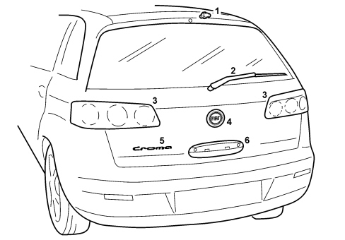
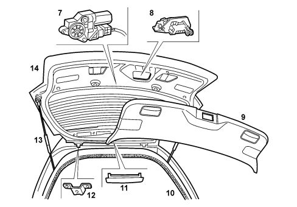
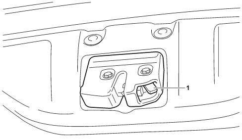

INTRODUCTION - TAILGATE
- Path
- Descriptions > 70 FITTINGS > 7015 TAILGATE/FLAP > INTRODUCTION - TAILGATE
- Kind
- system description
- Applies to
- all engines; all production periods
- Interactive page
- https://sloeber94.github.io/elrnDB-fCrm/en/#/194001943
Applies to: all engines; all production periods
SPECIFICATIONS
The tailgate is produced by traditional pressing processes: it has an extensive bonded window with black serigraphed edges in the area where it overlaps with the structure. There is a defrosting circuit in the glass.
There is an opening, under the window in the centre of the panel, that houses the rearscreen wiper blade.
The rearscreen washer jet is housed in the top part of the tailgate.
The electric opening handle can be found on the lower part.
The FIAT logo is above the handle, and the badge saying CROMA is at the bottom on the left.
The (left and right) rear light clusters containing the reversing and rear fog lamps are housed at the sides of the panel.
For further details,
See descriptions 5540 EXTERIOR LIGHTING
The third bake light is located inside the tailgate upper trim moulding.
The tailgate has an internal cover with two compartments for access to the lights and two housings for putting your hands in in order to be able to open or close the actual tailgate.
The tailgate is opened by:
- using the electric handle;
- pressing the dedicated button on the T.E.G. remote control (release only);
- in emergencies, using a special lever on the lock.
The tailgate is kept in position by two gas springs.
7015A TAILGATE ASSEMBLY
Composition
View of tailgate components


1 - Rearscreen washer jet
2 - Wiper arm
3 - Rear light cluster
4 - FIAT logo
5 - CROMA model badge
6 - Handle
7 - Rearscreen wiper motor
8 - Tailgate lock
9 - Internal cover
10 - Seal
11 - Third brake light
12 - Tailgate hinges
13 - Telescopic struts
14 - Rear tailgate
7015B TAILGATE OPENING/CLOSING DEVICES
Boot/tailage unlocking and opening
Locking/unlocking the boot
The boot is considered as a fifth door to all intents and purposes and it is managed by the NBC which receives the status to be implemented and updates the current boot "locked/unlocked" status.
The boot default condition is subject to the central locking system.
Using the set-up logic managed by the NQS or, if fitted, the NIT, the "boot always locked" option can be set.
As a result of the choice made by the user, the boot may or may not be unlocked together with the doors.
For further details,
See descriptions 7005 PASSENGER COMPARTMENT FRONT SIDE DOORS
When the boot is closed, it is aligned with the status of the vehicle (unlocked if the doors are unlocked, locked if the doors are locked) unless there is a different setting; in the latter case, it is locked when closed again.
Therefore if the boot is not subject to the door unlocking, it remains in the locked state. The boot is unlocked by a specific command on the remote control.
Closing the boot again
Once it has been opened using the electric handle, the boot returns to its previous state when it is closed again.
- if the vehicle was unlocked, the boot is unlocked and can be opened againg using the handle (fifth door behaviour);
- if the vehicle was locked, the boot is locked, realigning itself with the status of the doors.
Independent boot unlocking
The behaviour of the boot can be set to 2 operating modes using the instrument panel or the NIT:
- boot subject to central locking (default): the boot status reflects door status. With the vehicle locked, the boot is locked, with the vehicle unlocked, the boot is unlocked;
- boot independent: the boot is always locked (protecting its contents) and can only be opened using the mechanical key in the boot pawl.
Emergency opening of the boot
In order to be able to open the tailgate from the inside, if the vehicle battery were run down or if there were a problem with the tailgate electric lock, proceed as follows:
- completely lower the rear head restraints;
- fold the rear seat cushions over;
- fold the backrests over;
- to unlock the tailgate mechanically, working from the inside of the luggage compartment, use the release lever shown in the diagram.

1 - Tailgate release lever